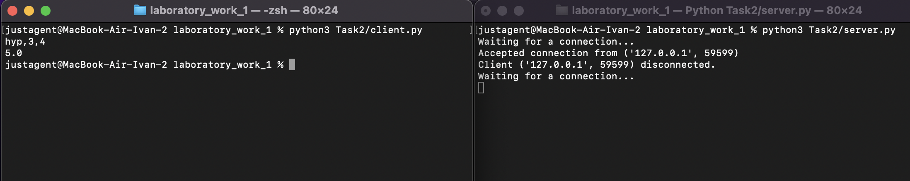

Задание 1
Реализовать клиентскую и серверную часть приложения. Клиент отсылает серверу сообщение «Hello, server». Сообщение должно отразиться на стороне сервера. Сервер в ответ отсылает клиенту сообщение «Hello, client». Сообщение должно отобразиться у клиента.
Обязательно использовать библиотеку socket
Реализовать с помощью протокола UDP
Ход выполнения работы
Код server.py
from socket import *
ip = '127.0.0.1'
port = 3000
server = socket(AF_INET, SOCK_DGRAM)
server.bind((ip, port))
while True:
msg, addr = server.recvfrom(1024)
print(msg.decode("utf-8"))
server.sendto(b"Hello, client", addr)
Код client.py
from socket import *
ip= '127.0.0.1'
port = 3000
client = socket(AF_INET, SOCK_DGRAM)
client.connect((ip, port))
client.send(b"Hello, server")
server_message = client.recvfrom(1024)
msg = server_message[0].decode()
print(msg)
Результат

Задание 2
Реализовать клиентскую и серверную часть приложения. Клиент запрашивает у сервера выполнение математической операции, параметры, которые вводятся с клавиатуры. Сервер обрабатывает полученные данные и возвращает результат клиенту. Вариант: Теорема Пифагора
Обязательно использовать библиотеку socket
Реализовать с помощью протокола TCP
Ход выполнения работы
Код server.py
from socket import *
from calculate import calculate
if __name__ == "__main__":
ip = '127.0.0.1'
port = 3000
server = socket(AF_INET, SOCK_STREAM)
server.bind((ip, port))
server.listen()
while True:
try:
print("Waiting for a connection...")
client, addr = server.accept()
print(f"Accepted connection from {addr}")
while True:
data = client.recv(1024).decode("utf-8")
if not data:
print(f"Client {addr} disconnected.")
break
operation, a, b = data.split(',')
a, b = float(a), float(b)
if operation == "hyp":
result = calculate(cath1=a, cath2=b)
elif operation == "cath":
result = calculate(cath1=a, hyp=b)
else:
result = "Invalid operation"
client.send(bytes(str(result), encoding="utf-8"))
except KeyboardInterrupt:
print("Server terminated by user.")
break
except Exception as e:
print(f"Error: {e}")
server.close()
Код client.py
from socket import *
if __name__ == "__main__":
ip= '127.0.0.1'
port = 3000
client = socket(AF_INET, SOCK_STREAM)
client.connect((ip, port))
input = input()
client.sendall(input.encode())
answer = client.recv(1024).decode()
print(answer)
Результат

Задание 3
Реализовать серверную часть приложения. Клиент подключается к серверу. В ответ клиент получает http-сообщение, содержащее html-страницу, которую сервер подгружает из файла index.html.
Обязательно использовать библиотеку socket
Ход выполнения работы
Код server.py
from socket import *
content = open("Task3/index.html").read()
if __name__ == "__main__":
ip = '127.0.0.1'
port = 3000
server = socket(AF_INET, SOCK_STREAM)
server.bind((ip, port))
server.listen()
while True:
try:
print("Waiting for a connection...")
client, addr = server.accept()
print(f"Accepted connection from {addr}")
response = "HTTP/1.1 200 OK\nContent-Type: text/html; charset=utf-8\n\n" + content
client.send(response.encode())
client.close()
except KeyboardInterrupt:
print("Server terminated by user.")
break
except Exception as e:
print(f"Error: {e}")
server.close()
Код client.py
from socket import *
if __name__ == "__main__":
ip= '127.0.0.1'
port = 3000
client = socket(AF_INET, SOCK_STREAM)
client.connect((ip, port))
request = "GET / HTTP/1.1\r\nHost: localhost\r\n\r\n"
client.send(request.encode('utf-8'))
response = client.recv(1024).decode('utf-8')
print(response)
Код index.html
<!DOCTYPE html>
<html>
<head>
<title>Hello, Dear client!</title>
</head>
<body>
<h1>Hello, Dear client!</h1>
</body>
</html>
Результат

Задание 4
Реализовать двухпользовательский или многопользовательский чат. Реализация многопользовательского часа позволяет получить максимальное количество баллов.
Обязательно использовать библиотеку threading
Ход выполнения работы
Код server.py
import socket
import threading
if __name__ == "__main__":
clients_list = []
lock = threading.Lock()
server_ip = "127.0.0.1"
server_port = 3003
def send_message_handler(client, addr, clients_list):
while True:
data = client.recv(1024).decode("utf-8")
if not data:
break
with lock:
for c in clients_list:
if c != client:
c.send(f"{addr[1]}: {data}".encode("utf-8"))
conn = socket.socket(socket.AF_INET, socket.SOCK_STREAM)
conn.setsockopt(socket.SOL_SOCKET, socket.SO_REUSEADDR, 1)
conn.bind((server_ip, server_port))
conn.listen(10)
while True:
try:
print("Waiting for a connection...")
client, addr = conn.accept()
print(f"Accepted connection from {addr}")
with lock:
clients_list.append(client)
threading.Thread(target=send_message_handler, args=(client, addr, clients_list)).start()
except KeyboardInterrupt:
conn.close()
break
Код client.py
from socket import *
from threading import *
def message_handler(client):
while True:
msg = client.recv(1024).decode("utf-8")
print(msg)
if __name__ == "__main__":
ip= '127.0.0.1'
port = 3003
conn = socket(AF_INET, SOCK_STREAM)
conn.connect((ip, port))
receive_thread = Thread(target=message_handler, args=(conn,))
receive_thread.start()
while True:
try:
message = input()
conn.send(message.encode("utf-8"))
except KeyboardInterrupt:
conn.close()
print("Terminated by user.")
break
except Exception as e:
print(f"Error: {e}")
break
Результат

Задание 5
Необходимо написать простой web-сервер для обработки GET и POST http запросов средствами Python и библиотеки socket.
Задание: сделать сервер, который может: ● Принять и записать информацию о дисциплине и оценке по дисциплине. ● Отдать информацию обо всех оценах по дсициплине в виде html-страницы.
Ход выполнения работы
Код server.py
import socket
class MyHTTPServer:
def __init__(self, server_ip, server_port, num_listen=1):
self.conn = socket.socket(socket.AF_INET, socket.SOCK_STREAM)
self.conn.setsockopt(socket.SOL_SOCKET, socket.SO_REUSEADDR, 1)
self.conn.bind((host, port))
self.conn.listen(num_listen)
self.grades = {}
def serve_forever(self):
while True:
client, addr = self.conn.accept()
self.serve_client(client)
def serve_client(self, client):
data = client.recv(2 * 16384).decode(encoding="utf-8", errors="ignore")
self.parse_request(client, data)
def parse_request(self, client, data):
lines = data.split("\n")
method, url, version = lines[0].split()
if method == "GET":
params = (
{p.split("=")[0]: p.split("=")[1] for p in url.split("?")[1].split("&")}
if "?" in url
else None
)
elif method == "POST":
body = data.split("\n")[-1]
params = {p.split("=")[0]: p.split("=")[1] for p in body.split("&")}
else:
params = None
self.handle_request(client, method, params)
def handle_request(self, client, method, params):
if method == "GET":
self.send_response(client, 200, "OK", self.grades_to_html())
elif method == "POST":
discipline = params.get("discipline")
grade = params.get("grade")
self.grades[discipline] = grade
self.send_response(client, 200, "OK", "Содержимое сохранено!")
else:
self.send_response(client, 404, "Not Found", "Некорректный метод, попробуйте снова.")
def send_response(self, client, code, reason, body):
response = f"HTTP/1.1 {code} {reason}\nContent-Type: text/html\n\n{body}"
client.send(response.encode("utf-8"))
client.close()
def grades_to_html(self):
page = (
f"<html><body><p>Grades:</p><ul>"
f"{''.join([f'<li>{discipline}: {grade}' for discipline, grade in self.grades.items()])}"
f"</ul></body></html>"
)
return page
if __name__ == "__main__":
host = "127.0.0.1"
port = 3000
server = MyHTTPServer(host, port)
try:
server.serve_forever()
except KeyboardInterrupt:
server.conn.close()
Код client.py
import requests
if __name__ == "__main__":
url = "http://localhost:3000"
params = {
"discipline": "math",
"grade": "3"
}
try:
response = requests.post(url, data=params)
if response.status_code == 200:
print("POST request successful")
else:
print(f"POST request failed with status code: {response.status_code}")
except Exception as e:
print(f"An error occurred: {e}")
Результат